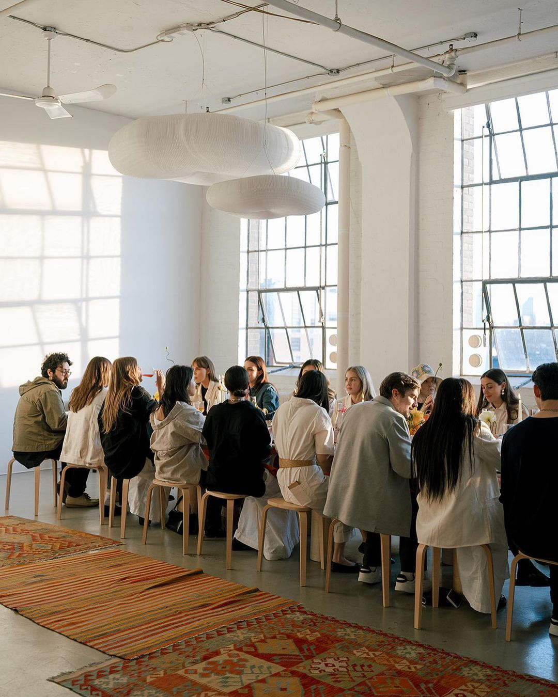
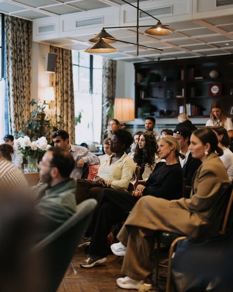
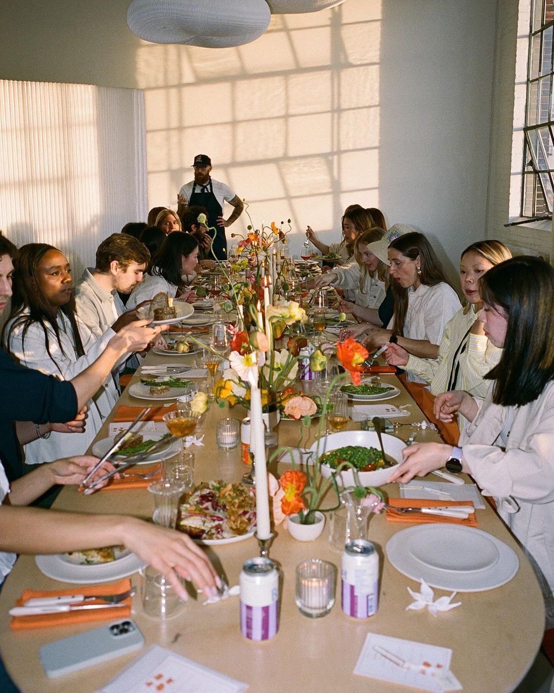
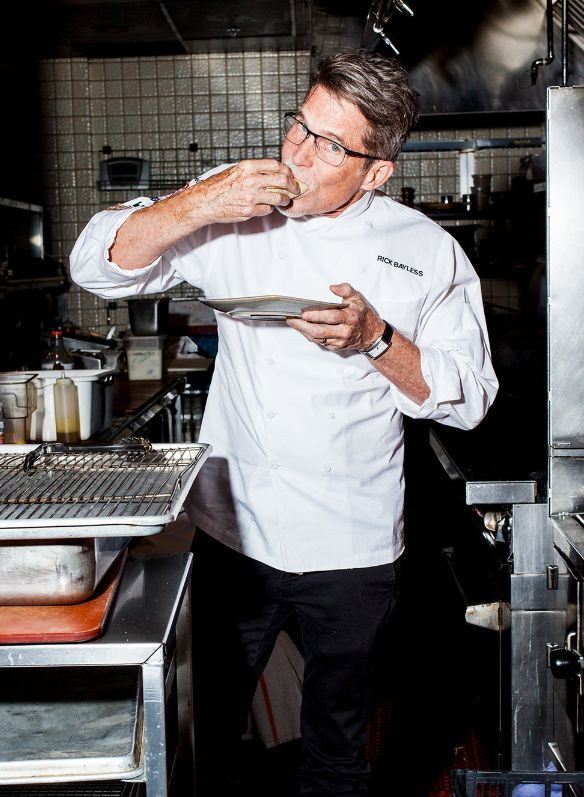
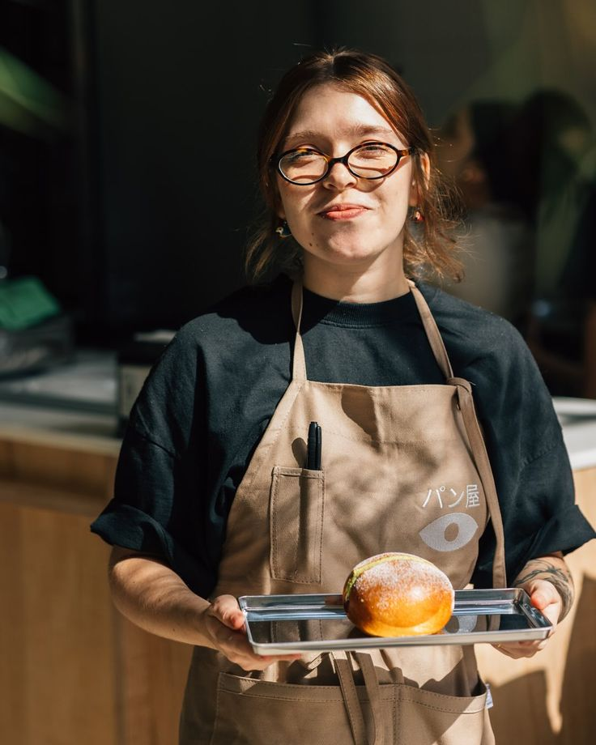
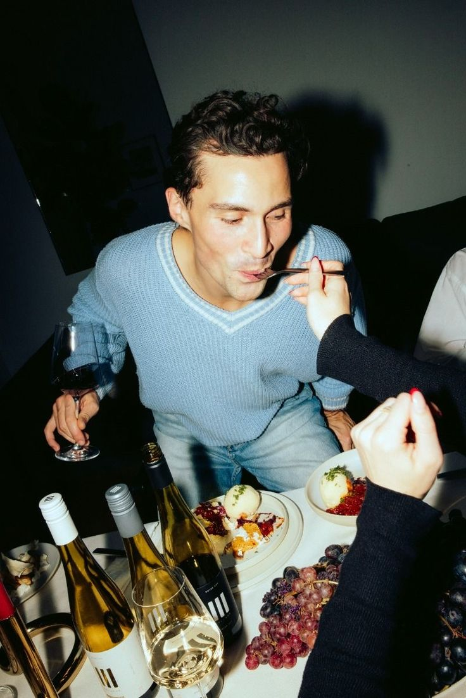

История кафе
Идея «Философского супа» появилась из простого вопроса — можно ли объединить гастрономию и философию? Мы верим, что вкус и мысль способны обогащать друг друга: одно пробуждает чувства, другое — разум.
Первое кафе открылось в старинном доме художников. Здесь родилась традиция подавать каждое блюдо с карточкой, на которой напечатана цитата — философская, поэтическая или просто вдохновляющая.
Сегодня «Философский суп» — это не просто место, где пьют кофе. Это сообщество людей, ищущих смысл, уют и вдохновение.
Формат мероприятий

Философские вечера
Обсуждения текстов, фильмов и идей великих мыслителей. Здесь можно послушать, поспорить и просто насладиться атмосферой.

Поэтические чтения
Гости кафе читают стихи — свои и любимых авторов. Каждый вечер сопровождается музыкой, десертами и живыми аплодисментами.

Арт-дегустации
Серия встреч, где мы объединяем вкус, визуальное искусство и философию. Картины, музыка и кухня рассказывают одну историю.
Наша команда
Мы собрали людей, которые верят, что вкус — это искусство, а беседа — лучший способ делиться вдохновением.

Алексей Морозов
Шеф-повар
Создаёт меню, в котором каждое блюдо имеет смысл. Автор серии «Философия вкуса».

Мария Кузнецова
Главный бариста
Считает, что кофе — это маленькая медитация. Разрабатывает авторские напитки для каждого события.

Илья Соколов
Философ-вдохновитель
Куратор лекций и встреч. Помогает находить идеи, которые делают жизнь осмысленной — и вкусной.